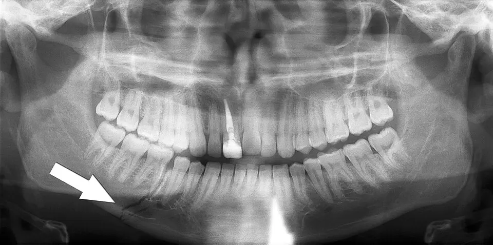

DX.5 — Fracture mandibulaire
Une fracture de la mandibule menace d'abord la respiration, car un hématome du plancher buccal ou un recul de la langue peut obstruer les voies aériennesS5. Elle siège souvent en plusieurs foyers, et le foyer condylien se cache loin du point d'impactS2S5. Le médecin sécurise donc les fonctions vitales, puis il lit l'occlusion dentaire, qui reste le signe le plus sensibleS4. Il traite ensuite toute fracture de la portion dentée comme une fracture ouverte, urgente et adressée au chirurgien maxillo-facialS5.
1. Définition
Une fracture mandibulaire est une interruption de la continuité de l'os de la mâchoire inférieure, en un ou plusieurs foyersS5. Le collège français de chirurgie maxillo-faciale et stomatologie, dans son enseignement de 2014, sépare deux ensemblesS5. Les fractures du corps mandibulaire touchent les portions dentées et la région angulaire ; elles sont le plus souvent ouvertesS5. Les fractures des branches mandibulaires touchent en revanche les portions non dentées et la région condylienne ; elles sont habituellement ferméesS5. La Fondation AO précise que toute fracture qui traverse la zone portant les dents se considère comme une fracture ouverteS4.
2. Épidémiologie (Suisse, puis Europe)
L'Hôpital de l'Île, à Berne, a recensé 420 adultes porteurs de 707 fractures mandibulaires entre 2000 et 2007S2. Cette série donne ainsi une incidence annuelle de 0,0024 %, nettement plus basse que celle des autres pays comparésS2. Le blessé type est un homme jeune : le rapport hommes-femmes atteint 2,7 pour 1 et l'âge moyen 37 ansS2. Les causes, les sièges, les âges et la comparaison européenne précisent ce profil et orientent la prévention.
Causes relevées à Berne de 2000 à 2007
Les accidents de sport et de loisirs dépassent en Suisse les accidents de voiture et les rixes, à l'inverse d'autres pays développésS2. Le vélo représente à lui seul la moitié des accidents de la circulation de la sérieS2. Les sports d'hiver comptent en outre pour 58 % des accidents sportifs, et le hockey sur glace arrive en têteS2.
| Cause | Patients | Part | Détail |
|---|---|---|---|
| Accidents de la circulation | 117 | 28 % | Le vélo compte 59 blessés, la voiture 31 et la moto 21S2. |
| Sport | 88 | 21 % | Le hockey sur glace compte 28 blessés, le ski 23 et les sports de contact 8S2. |
| Violence entre personnes | 72 | 17 % | La part des agressions augmente légèrement, avec un pic en 2006S2. |
| Chutes | 68 | 16 % | Les chutes dominent après 50 ansS2. |
Un patient sur huit environ, soit 13 %, était sous l'influence de l'alcool ou de drogues à l'admissionS2. Aucune blessure par arme à feu ne figure dans la série bernoiseS2.
Répartition des 707 fractures bernoises
Chaque patient présente en moyenne 1,7 fracture, ce qui impose de chercher un second foyer devant tout premier traitS2. Le condyle et la symphyse réunissent plus des trois quarts des foyers, alors que l'angle et le corps restent peu touchésS2.
| Siège | Fractures | Part |
|---|---|---|
| Condyle et région sous-condylienne | 303 | 43 %S2 |
| Symphyse et parasymphyse | 246 | 35 %S2 |
| Angle | 87 | 12 %S2 |
| Corps (branche horizontale) | 53 | 7 %S2 |
| Processus coronoïde | 13 | Ce siège reste rareS2. |
| Ramus | 5 | Ce siège est le plus rareS2. |
Le mécanisme annonce le siège : la circulation et les chutes donnent surtout des fractures condyliennes, le sport et les rixes des fractures de l'angleS2. Les lésions associées comptent aussi, car 93 patients, soit 22 %, portaient une fracture du maxillaire ou de l'étage moyenS2. Une commotion cérébrale accompagnait 19 % des cas, mais les lésions cérébrales graves restaient très raresS2.
Âge et terrain
Le risque décroît avec l'âge : la série compte 190 patients de 16 à 29 ans, 139 de 30 à 49 ans et 91 au-delà de 50 ansS2. Les causes changent aussi, puisque 37 des 91 patients de plus de 50 ans se sont blessés en tombantS2. Les extrêmes de la série vont de 16 à 97 ans, car la base de données ne couvrait pas les urgences pédiatriquesS2.
Chez l'enfant, les traumatismes maxillo-faciaux sont beaucoup moins fréquents, la prédominance masculine s'atténue et les chutes dominent avec les accidents de la voie publiqueS5. Les fractures de la région condylienne sont cependant les plus fréquentes des fractures mandibulaires, surtout à cet âgeS5.
Europe et histoire naturelle
Le collège français décrit un blessé de 18 à 25 ans, avec un rapport de 3 à 4 hommes pour une femmeS5. Il estime en outre qu'environ 30 % des fractures mandibulaires sont plurifocales, souvent avec un foyer condylien associéS5. Une étude prospective de douze centres européens a opéré 425 patients en un an : 194 fractures uniques, 182 doubles et 49 triplesS8.
| Pays (étude citée par la série bernoise) | Incidence annuelle |
|---|---|
| Australie | 0,046 %S2 |
| Finlande | 0,009 %S2 |
| Écosse | 0,007 %S2 |
| Bulgarie | 0,006 %S2 |
| Suisse (Berne) | 0,002 %S2 |
Les auteurs bernois demandent de comparer ces chiffres avec prudence, car la population desservie reste mal estiméeS2. Selon la littérature qu'ils citent, la mandibule représente de 15,5 à 59 % des fractures de la faceS2. Sans traitement adapté, l'évolution expose au cal vicieux, à la malocclusion séquellaire, à l'infection du foyer et à l'ankylose de l'articulationS5.
3. Physiopathologie
La mandibule porte l'arcade dentaire inférieure et s'articule avec le crâne par les deux articulations temporo-mandibulairesS5S6. Un choc direct brise la portion dentée ou l'angle, alors qu'un choc sur le menton, bouche entrouverte, brise le condyle à distanceS5. Les fragments se déplacent ensuite sous l'effet du traumatisme et de la traction des muscles, ce qui dérègle l'occlusionS5. La base anatomique, le caractère ouvert, la mécanique condylienne, le terrain et le tableau de corrélation détaillent cette chaîne.
Base à connaître
Les muscles élévateurs ferment la bouche : ce sont les muscles temporaux, les masséters et les ptérygoïdiensS6. Les muscles abaisseurs l'ouvrent : ce sont les mylo-hyoïdiens, les génio-hyoïdiens et les digastriquesS6. Leur action combinée explique ainsi le chevauchement, l'angulation et le décalage des fragments dentés après la fractureS5.
Le nerf alvéolaire inférieur, qui est une branche du nerf mandibulaire (V3), chemine dans le canal mandibulaireS5. Le V3 est responsable de la sensibilité de l'hémi-lèvre inférieure, de l'hémi-menton, des dents et de la muqueuse de l'hémi-arcade inférieureS5. Une fracture très déplacée en regard du canal peut donc donner une anesthésie labio-mentonnière, sans aucune paralysie de la mimiqueS5. La région de l'angle et le pavillon de l'oreille échappent au trijumeau, car ils dépendent du plexus cervical superficielS5.
La branche mandibulaire est protégée par le masséter en dehors et par le ptérygoïdien médial en dedansS5. Les fractures du ramus restent donc habituellement fermées, grâce à cette enveloppe musculaireS5. Les lignes de fracture suivent volontiers des zones faibles : racines des incisives, foramens mentonniers et molaires à longues racinesS11.
Du cisaillement osseux à la fracture ouverte
Le choc cisaille l'os, et ce mouvement se transmet à la gencive, qui est inextensibleS5. La gencive se déchire alors, le plus souvent entre les deux dents qui bordent le foyerS5. Cette plaie fait communiquer le foyer avec la cavité buccale, d'où le caractère ouvert de la fractureS5. Le risque septique en découle : abcès du foyer, ostéite et pseudarthrose septique restent possiblesS5. Une prise en charge rapide et une antibioprophylaxie systématique ont rendu ce risque rareS5.
Le même traumatisme peut contondre ou étirer le nerf alvéolaire inférieur dans son canalS5. Le trouble sensitif est le plus souvent immédiat et transitoire après une simple contusion, mais il devient parfois définitifS5. Il peut ensuite évoluer vers une douleur chronique de type névralgique, parfois très invalidanteS5.
Raccourcissement de la branche et ses effets
La fracture déplacée du condyle raccourcit la branche mandibulaire du côté atteintS5. Les molaires de ce côté se touchent donc trop tôt, tandis qu'une pseudo-béance s'ouvre du côté opposéS5. Le point inter-incisif inférieur se décale vers la fracture, et la mandibule dévie du même côté à l'ouvertureS5. Une atteinte bilatérale raccourcit les deux branches : les molaires se touchent des deux côtés et une béance antérieure apparaîtS5.
L'articulation subit aussi des lésions de l'appareil discal lors du choc initialS5. Ces lésions et le raccourcissement entretiennent une hypomobilité, puis parfois un dysfonctionnement douloureux avec bruits articulairesS5. L'ankylose résulte d'une ossification progressive de la région articulaire, surtout après une fracture intra-articulaireS5. Chez l'enfant, la fracture perturbe la croissance du côté atteint et conduit à une asymétrie mandibulaire parfois sévèreS5.
Enfant, sujet édenté, implants
Chez l'enfant, les fractures sont souvent peu déplacées, en bois vert, et elles échappent parfois au cliché panoramiqueS5. Le trait peut traverser un germe dentaire et l'endommager, d'où une surveillance de l'éruption des dents définitivesS5. Le condyle de l'enfant garde en revanche un potentiel de remodelage que le traitement fonctionnel exploiteS5S9.
Chez le sujet édenté, la perte osseuse liée à l'édentation fragilise le corps mandibulaire, où les fractures prédominentS5. Ces fractures sont souvent peu symptomatiques, et celles de l'angle deviennent raresS5.
Les implants dentaires ostéo-intégrés ne guident pas le trait : à Berne, 16 des 390 patients, soit 4,1 %, portaient des implants mandibulairesS11. Un seul implant se trouvait directement sur une ligne de fracture dans cette sérieS11.
Perturbation, exploration, thérapeutique
| Perturbation | Exploration qui la montre | Thérapeutique qui la corrige (mécanisme) |
|---|---|---|
| Le déplacement des fragments dentés dérègle l'articuléS5. | L'examen de l'occlusion et le cliché panoramique le montrentS5. | La réduction avec ostéosynthèse restaure l'occlusion d'avant le traumatismeS5. |
| La plaie gingivale ouvre le foyer sur la boucheS5. | L'inspection endobuccale la découvre entre deux dentsS5. | L'antibioprophylaxie et le traitement rapide réduisent le risque septiqueS5. |
| Le nerf alvéolaire inférieur souffre dans le canalS5. | Le test de la sensibilité labio-mentonnière le révèleS5. | La réduction prudente évite une lésion nerveuse supplémentaireS5. |
| La branche se raccourcit après une fracture condylienneS5. | Le scanner précise la hauteur du trait et le déplacementS5. | La mobilisation précoce ou l'ostéosynthèse rétablit la fonction articulaireS5. |
| La langue recule après une fracture biparasymphysaireS5. | L'examen des voies respiratoires hautes le constateS5. | La libération des voies aériennes, puis l'intubation si besoin, lève l'obstructionS5. |
4. Démarche diagnostique
Le médecin écarte d'abord ce qui tue : l'asphyxie, le choc hémorragique, le traumatisme crânien et la lésion du rachis cervicalS5. Tout traumatisé de la face se considère en effet comme un traumatisé crânien et cervical jusqu'à preuve du contraireS5. Il cherche ensuite la fracture elle-même, puis il compte les foyers, car un trait symphysaire appelle un trait condylienS5. Les urgences à exclure et les diagnostics discriminants structurent cette démarche ; la fracture voisine du zygoma est traitée dans DX.6.
Les graves d'abord
| 🚩 Constat | Signification | Action immédiate |
|---|---|---|
| Du sang, un œdème ou des fragments gênent la respirationS5. | Les voies aériennes supérieures s'encombrent ou se rétrécissentS5. | Une équipe entraînée libère et sécurise les voies aériennesS5. |
| La langue recule après une fracture parasymphysaire bilatéraleS5. | Une glossoptose menace d'asphyxieS5. | L'intubation s'envisage vite ; la trachéotomie reste le dernier recoursS5. |
| Une plaie de la face saigne abondamment ou le sang est déglutiS5. | La perte sanguine peut être masquée et sous-estiméeS5. | Le médecin comprime, pose une voie veineuse de bon calibre et surveille l'hémodynamiqueS5. |
| La conscience se trouble ou le mécanisme est violentS5. | Un traumatisme crânien ou cervical accompagne peut-être la fractureS5. | Le bilan crânien et cervical précède l'imagerie de la faceS5. |
| Une plaie buccale siège en regard du foyerS5. | La fracture est ouverte et le risque septique existeS5. | Le patient reste à jeun, reçoit une antibioprophylaxie et rejoint le chirurgienS5. |
| La déglutition devient impossible ou la douleur empêche toute alimentation. | Le maintien à domicile n'est plus sûr. | Le médecin évalue l'hospitalisation et le traitement. |
Ce qui ressemble à une fracture mandibulaire
| Diagnostic | Élément qui tranche | Piège | Conduite si positif |
|---|---|---|---|
| Fracture alvéolo-dentaire | Un secteur dentaire isolé bouge seulS5. | Des dents mobiles n'accompagnent pas toujours une fracture de l'osS4. | Un cliché rétro-alvéolaire sépare la lésion dentaire de la lésion osseuseS5. |
| Fracture de Le Fort | Toute l'arcade dentaire supérieure est mobileS5. | Le trouble de l'articulé existe aussi dans cette fractureS5. | Le scanner de la face précise les traits de l'étage moyenS5. |
| Fracture du rocher | L'otorragie s'accompagne d'un hémotympan, d'une surdité, d'une paralysie faciale et de vertigesS5. | Une fracture condylienne saigne aussi par l'oreille, par plaie du conduitS5. | L'examen du tympan et le scanner orientent vers la base du crâneS5. |
| Hématome intra-articulaire sans fracture | La douleur préauriculaire existe sans trait à l'imagerieS4. | Le cliché panoramique donne des faux négatifs condyliensS5. | Le scanner lève le doute avant de conclureS5. |
| Anomalie occlusale ancienne | Les facettes d'usure et les antécédents montrent un articulé déjà particulierS5. | Une dysharmonie préexistante s'attribue à tort au chocS5. | Le dentiste traitant ou des photographies anciennes documentent l'état antérieurS5. |
Une luxation de la mandibule relève aussi du chirurgien maxillo-facial, qui prend en charge ces deux lésions aux Hôpitaux universitaires de Genève (HUG)S1.
5. Anamnèse ciblée et drapeaux rouges
L'interrogatoire s'adresse au patient, ou à son entourage s'il ne peut pas répondreS5. Il précise d'abord le mécanisme, puis la douleur et le trouble de l'articulé, qui sont les deux plaintes principales. Il caractérise aussi l'engourdissement du menton, la limitation de l'ouverture et le saignement, qui orientent vers le siège. Il relève ensuite les antécédents et l'état dentaire antérieur, qui serviront de repère à la réductionS5. Les drapeaux rouges imposent chacun une action immédiate ; toutes les données sont notées et datées pour leur valeur médico-légaleS5.
Mécanisme : quatre questions
Le médecin demande la date et l'heure, car le traitement d'une fracture ouverte se conçoit dans les heures qui suiventS5. Il demande les circonstances : agression, accident de la voie publique, du travail, domestique ou de sportS5. Il fait préciser le point d'impact, puis la direction et l'intensité du chocS5. Un impact sur le menton oriente vers les condyles, alors qu'un choc direct oriente vers la portion dentée ou l'angleS5.
Il recherche enfin une sensation de craquement au moment du choc, que le patient rapporte parfois spontanémentS5. Un mécanisme violent, une perte de connaissance ou une amnésie élargissent d'emblée le bilan au crâne et au rachisS5.
Douleur
La douleur typique siège au niveau du trait de fracture et augmente à la mobilisation et à la masticationS5. Une douleur préauriculaire, spontanée ou provoquée par le mouvement, est typique d'une fracture condylienne du même côtéS5. Elle peut toutefois traduire un simple hématome intra-articulaire, ce qui la rend évocatrice sans être spécifiqueS4.
Une douleur très discrète est atypique, mais elle n'écarte rien chez le sujet édenté, dont les fractures sont souvent peu symptomatiquesS5. Le siège de la douleur maximale ne désigne pas non plus le seul foyer, puisqu'un second trait existe souvent à distanceS2S5.
« Mes dents ne se touchent plus comme avant »
Cette plainte est le symptôme le plus typique : la malocclusion compte parmi les indicateurs les plus sensibles d'une fracture mandibulaireS4. Le patient décrit des contacts dentaires prématurés ou une béance, c'est-à-dire un espace nouveau entre les arcadesS5. Il signale parfois une prothèse dentaire qui ne s'adapte plus, ou des dents déplacées, mobiles ou perduesS5.
Le médecin demande toujours si l'articulé était déjà particulier avant l'accident, par exemple après un traitement orthodontiqueS5. Une dysharmonie ancienne rend en effet la plainte atypique et ne doit pas s'attribuer au chocS5.
Engourdissement labio-mentonnier
Une hypoesthésie ou une anesthésie de l'hémi-lèvre inférieure et du menton est typique d'un trait situé en regard du canal mandibulaireS5. La Fondation AO y voit un indicateur sensible d'une fracture sur le trajet du nerf alvéolaire inférieurS4. Ce symptôme concerne donc la sensibilité du trijumeau et non la motricité du nerf facialS5.
Le médecin note ce trouble avant tout geste, parce qu'une atteinte du nerf peut aussi survenir pendant la réductionS5. Un simple engourdissement au point d'impact reste possible par contusion d'une branche nerveuse, sans fracture sous-jacenteS5.
Ouverture buccale et mastication
Une ouverture limitée et douloureuse est typique : il s'agit d'un trismus antalgique dans les fractures de la portion dentéeS5. Dans la fracture condylienne, l'ouverture, la propulsion et le mouvement latéral vers le côté sain se limitentS5. Le patient décrit par ailleurs une gêne pour mordre, mâcher et parfois avalerS5.
Une déviation du menton à l'ouverture oriente vers le condyle du côté où la mandibule dévieS4.
Saignement, salivation, écoulement d'oreille
Un saignement de la bouche et une salivation abondante sont typiques des fractures de la portion dentée, qui déchirent la genciveS5. Un saignement par l'oreille est moins fréquent : il accompagne une fracture condylienne quand le conduit auditif est blesséS5. Associé à une surdité, à des vertiges ou à une paralysie du visage, ce saignement oriente au contraire vers le rocherS5.
Du sang dégluti masque la perte réelle, raison pour laquelle le contrôle de l'hémodynamique reste systématiqueS5.
Antécédents, traitements, état antérieur
Le médecin relève les antécédents et les traitements en cours, dont les anticoagulantsS5. Il précise l'état dentaire d'avant : dents manquantes, prothèses, restaurations, anomalie de l'occlusionS5. L'occlusion antérieure sera en effet l'un des repères les plus importants pour contrôler la réductionS5.
Un contact avec le dentiste traitant et des photographies récentes d'avant l'accident aident à reconstituer cet étatS5. Une dent absente après le choc doit s'expliquer, car un fragment peut avoir été avalé ou inhaléS5. Le statut vaccinal contre le tétanos se vérifie systématiquement dans tout traumatisme facialS5.
Drapeaux rouges
| 🚩 Drapeau rouge | Signification | Action immédiate |
|---|---|---|
| Le patient respire difficilementS5. | Un hématome du plancher buccal ou une glossoptose progresseS5. | Le médecin libère les voies aériennes et fait préparer l'intubationS5. |
| Il a perdu connaissance ou ne se souvient plus de l'accidentS5. | Un traumatisme crânien est probableS5. | L'examen neurologique se répète et l'imagerie crânienne passe en premierS5. |
| Il vomit alors que ses mâchoires sont bloquéesS5. | Une inhalation menaceS5. | Les ciseaux gardés à portée de main coupent le blocage sans délaiS5. |
| Un liquide clair coule du nezS5. | Une brèche méningée expose à la méningiteS5. | Le médecin signale cet écoulement et demande un avis spécialiséS5. |
| Une dent a disparu et reste introuvableS5. | Elle peut se trouver dans les voies aériennesS5. | Le bilan cherche le corps étranger et la dent se conserve pour une réimplantationS5. |
6. Examen physique ciblé, région par région
L'examen suit l'ordre des priorités : il commence par les voies aériennes, puis il passe à l'inspection et à la palpation des reliefs. Il se poursuit dans la cavité buccale, par l'occlusion, les mouvements de la mandibule et la sensibilité du menton. Il se termine par les conduits auditifs, le reste de la face et le nerf facial, avec des particularités chez l'enfant. Le médecin répète cet examen et le date, car certaines fonctions s'altèrent de façon progressiveS5.
Temps 1 — Voies aériennes et état général
Le signe recherché est une gêne respiratoire par obstruction nasale, rhinopharyngée ou oropharyngéeS5. Le médecin regarde la bouche ouverte et cherche des caillots, un hématome, des corps étrangers, une prothèse ou une langue qui reculeS5. Il nettoie à la compresse, aspire, puis place si besoin une canule de MayoS5.
Une langue basculée en arrière après une fracture parasymphysaire bilatérale signe la glossoptoseS5. Le contrôle de l'hémodynamique accompagne ce premier temps, car les hémorragies de la face sont souvent impressionnantesS5. L'examen neurologique, avec le score de Glasgow et les pupilles, se répète ensuite dans le tempsS5.
Temps 2 — Inspection
L'inspection est systématique, symétrique et comparative : de face, de profil, puis en vues plongeantes inférieure et supérieureS5. Le médecin cherche une plaie, une ecchymose ou un hématome au point d'impact, puis il cherche des corps étrangersS5. Une plaie sous le menton est très fréquente dans la fracture condylienne et occupe parfois, à tort, le devant du tableauS5.
Un œdème survient rapidement et masque souvent les reliefs osseux, ce qui rend une faible déformation trompeuseS5. Le siège du gonflement aide néanmoins à localiser la fracture, selon la Fondation AOS4. Une tuméfaction en avant de l'oreille oriente vers le condyle du même côtéS5. Un élargissement du tiers inférieur du visage évoque une fracture trifocale, qui écarte les deux anglesS5.
Temps 3 — Palpation externe
Le médecin suit des doigts le bord inférieur de la mandibule, du menton vers chaque angle, puis il remonte vers les condyles. Il recherche une douleur focale, une marche d'escalier ou une déformation, en comparant les deux côtésS5. Une douleur à la palpation préauriculaire indique une fracture du processus condylien ou un hématome intra-articulaireS4.
Le piège tient à la distance : la lésion se situe parfois loin de la zone la plus douloureuseS5. Le médecin palpe donc systématiquement les deux régions condyliennes après tout choc sur le mentonS5.
Temps 4 — Cavité buccale
Il inspecte, sous un bon éclairage, les dents, la gencive, la langue, le palais et les vestibulesS5. Il note chaque dent mobile, fracturée ou perdue, car ces lésions se décrivent précisément dans un but médico-légalS5. Une plaie de la gencive entre deux dents indique en règle une fracture sous-jacenteS4S5. Un hématome sous la langue ou ailleurs dans la bouche peut aussi révéler une fracture osseuseS4.
Il palpe ensuite la mandibule par la bouche et cherche une déformation, une mobilité anormale ou une plaie muqueuseS5. Une mobilité anormale entre deux segments voisins de l'arcade dentée signe la fractureS4. Ce geste reste prudent, à cause de la douleur et du risque de léser le nerf alvéolaire inférieurS5. Un diastème nouveau entre deux dents et un décalage du point inter-incisif complètent le tableauS5.
Temps 5 — Occlusion
Le patient serre doucement les dents, lèvres écartées, et le médecin regarde les contacts des deux côtés. Il se réfère ensuite aux antécédents et aux facettes d'usure, qui indiquent comment les dents s'emboîtaient avantS5. Des contacts prématurés ou une béance peuvent signer une fracture déplacée de la mandibule ou du maxillaireS5.
| Aspect de l'occlusion | Orientation |
|---|---|
| Un contact molaire prématuré d'un côté s'associe à une béance du côté opposé. | Ce tableau évoque une fracture condylienne du côté du contact prématuréS4S5. |
| Une béance antérieure laisse les incisives sans contact. | Ce tableau évoque des fractures bilatérales des condyles ou des anglesS4. |
| Une occlusion croisée existe des deux côtés. | Ce tableau peut traduire une fracture de la symphyse associée à deux fractures condyliennesS4. |
| Un décalage en marche d'escalier sépare deux dents voisines. | Ce tableau évoque une fracture déplacée de la portion dentéeS5. |
Le piège est l'anomalie ancienne : une occlusion déjà particulière ou une prothèse faussent la lectureS5.
Temps 6 — Mouvements de la mandibule
À la demande du médecin, le patient ouvre la bouche, avance le menton, puis il le déplace à droite et à gaucheS5. Il apprécie l'amplitude de chaque mouvement, la présence d'un trismus et la capacité de mordreS5. Une ouverture qui dévie d'un côté indique habituellement une fracture du condyle de ce côtéS4.
La déviation traduit le raccourcissement de la branche mandibulaire du côté fracturéS5. Dans la fracture unilatérale, le mouvement latéral vers le côté opposé se limite donc égalementS5. Une ouverture inférieure à 40 mm définit, à distance, la limitation séquellaire que le suivi cherche à éviterS5.
Temps 7 — Sensibilité labio-mentonnière
Au toucher léger, il compare les deux moitiés de la lèvre inférieure et du menton. Une hypoesthésie ou une anesthésie de ce territoire constitue le signe de VincentS5. Elle accompagne les fractures très déplacées situées en regard du canal mandibulaireS5.
Le résultat s'inscrit dans le dossier avant tout traitement, car un trouble apparu après l'opération engagerait la responsabilité du chirurgienS5. Le piège consiste à prendre ce déficit sensitif pour une faiblesse du nerf facial, qui est moteurS5.
Temps 8 — Conduits auditifs externes
Le médecin regarde chaque conduit et cherche des caillots, une plaie cutanée ou un rétrécissementS5. Une plaie de la paroi antérieure du conduit signe une fracture de l'os tympanal, consécutive à une fracture condylienneS5. Il note ensuite l'état du tympan, à la recherche d'un sang derrière la membrane ou d'une plaieS5.
Un hémotympan avec surdité, paralysie faciale et vertiges oriente vers une fracture du rocher et non vers le condyleS5.
Temps 9 — Étage moyen, nerf facial, rachis
Le médecin teste la mobilité de l'arcade dentaire supérieure, car une arcade entièrement mobile signe une fracture de Le FortS5. Il palpe les pommettes et les rebords orbitaires, puisque 22 % des fractures mandibulaires bernoises s'associaient à une fracture de l'étage moyenS2. Il examine sommairement la motricité du visage chez le patient éveillé, avant qu'une sédation ne masque une plaie du nerf facialS5.
Il vérifie enfin le rachis cervical, le thorax, l'abdomen et les membres, qui relèguent parfois la face au second planS5.
Chez l'enfant
Le tableau typique associe une chute sur le menton, une plaie sous-mentonnière et une douleur en avant de l'oreilleS5. Le médecin cherche donc systématiquement une fracture condylienne devant toute plaie du menton de l'enfantS5. Les fractures en bois vert donnent peu de déformation, ce qui rend l'examen de l'occlusion et de l'ouverture décisifS5.
7. Approche syndromique
Six syndromes résument la fracture mandibulaire : chacun distingue ce que le patient rapporte de ce que le médecin constate à l'examenS5.
7.1 Syndrome de la portion dentée et de l'angle
Le foyer communique avec la bouche et déplace les dents ; ces signes de fracture ouverte font l'urgence thérapeutiqueS5.
7.1 Portion dentée et angle
| Signes fonctionnels | Signes physiques | Mécanisme |
|---|---|---|
| Le patient décrit une douleur au trait, une gêne pour mâcher et un saignement de la boucheS5. | Le médecin trouve une plaie gingivale, un trouble de l'articulé et une mobilité osseuse anormaleS5. | Le choc direct cisaille l'os et déchire la gencive inextensibleS5. |
| Il salive abondamment et ouvre peu la boucheS5. | Le trismus est antalgique et le point inter-incisif se décaleS5. | Les muscles élévateurs et abaisseurs déplacent les fragmentsS5. |
7.2 Syndrome condylien unilatéral
La branche se raccourcit d'un côté ; ce tableau latéralisé suit un choc sur le mentonS5.
7.2 Condyle, un côté
| Signes fonctionnels | Signes physiques | Mécanisme |
|---|---|---|
| Le patient ressent une douleur en avant de l'oreille, spontanée ou au mouvementS5. | Le médecin voit une tuméfaction préauriculaire et parfois une otorragieS5. | Le choc indirect se transmet au condyle, bouche entrouverteS5. |
| Il ouvre moins la bouche et avance mal le mentonS5. | La mandibule dévie du côté fracturé et les molaires de ce côté se touchent trop tôtS5. | La branche raccourcie fait pivoter la mandibule vers la fractureS5. |
7.3 Syndrome condylien bilatéral et fracture trifocale
Les deux branches se raccourcissent ; cette forme bilatérale est fréquente et difficile à traiterS5.
7.3 Condyles, deux côtés
| Signes fonctionnels | Signes physiques | Mécanisme |
|---|---|---|
| Le patient souffre des deux côtés et ne ferme plus les incisivesS5. | Le médecin constate un contact molaire prématuré bilatéral et une béance antérieureS5. | Le raccourcissement des deux branches explique ce contact molaire bilatéralS5. |
| Il remarque parfois un visage élargi en basS5. | Les angles s'écartent quand une fracture du corps s'ajoute aux deux fractures condyliennesS5. | Les angles mandibulaires basculent en dehors, ce que le collège nomme valgisationS5. |
Dans un registre international, 123 des 226 patients porteurs de fractures condyliennes bilatérales, soit 54,4 %, ont reçu un traitement non chirurgicalS10.
7.4 Syndrome sensitif du nerf alvéolaire inférieur
Le nerf souffre dans son canal ; ce déficit sensitif se documente dès le premier examenS5.
7.4 Nerf alvéolaire inférieur
| Signes fonctionnels | Signes physiques | Mécanisme |
|---|---|---|
| Le patient décrit un engourdissement ou des fourmillements de la lèvre inférieure et du mentonS5. | Le médecin objective une hypoesthésie ou une anesthésie labio-mentonnière, appelée signe de VincentS5. | Le trait déplacé contond ou étire le nerf dans le canal mandibulaireS5. |
| Il rapporte plus tard une douleur de type névralgiqueS5. | Les dysesthésies persistent dans le même territoireS5. | Une lésion nerveuse sévère laisse un trouble définitifS5. |
7.5 Syndrome obstructif des voies aériennes
La respiration se gêne par la bouche ; cette obstruction constitue la complication immédiate à redouterS5.
7.5 Obstruction haute
| Signes fonctionnels | Signes physiques | Mécanisme |
|---|---|---|
| Le patient respire difficilement et avale malS5. | Le médecin voit un œdème ou un hématome du plancher buccalS5. | Le saignement du foyer infiltre le plancher de la boucheS5. |
| Il inhale parfois du sang, des dents ou des fragments de prothèseS5. | La langue recule après une fracture parasymphysaire bilatéraleS5. | La fracture bilatérale laisse reculer la langue vers le pharynxS5. |
7.6 Syndrome septique du foyer
La bouche contamine le foyer ; cette infection secondaire justifie l'antibioprophylaxie et le suiviS5.
7.6 Infection du foyer
| Signes fonctionnels | Signes physiques | Mécanisme |
|---|---|---|
| Le patient signale un gonflement et un écoulement près de la plaieS3. | Le médecin trouve une tuméfaction et un écoulement purulent en regard du foyerS3. | La plaie gingivale laisse entrer la flore buccaleS5. |
| Il constate que la fracture tarde à consoliderS5. | L'imagerie montre une ostéite ou une pseudarthrose septiqueS5. | L'infection empêche la consolidationS5. |
Dans l'essai bernois, une infection locale de la plaie est survenue chez 12 des 59 patients opérés, sous antibioprophylaxieS3. L'extension de l'infection aux espaces profonds du cou est décrite dans DX.7.
8. Diagnostic positif et critères
Le diagnostic positif est clinique et radiologique : il repose sur la concordance de l'examen et de l'imagerieS4S5. Un trouble récent de l'articulé, une mobilité osseuse anormale ou une plaie gingivale après un choc suffisent à suspecter la fractureS4S5. L'imagerie confirme ensuite le ou les traits, puis elle les décrit selon des critères de caractérisationS5. Les classifications du siège et du déplacement guident enfin le choix entre traitement fonctionnel et chirurgieS5.
Ce que le compte rendu doit préciser
| Critère | Ce qu'il faut écrire | Pourquoi |
|---|---|---|
| Siège exact | Le compte rendu nomme la symphyse, la parasymphyse, le corps, l'angle, le ramus, le condyle ou le coronoïdeS2S5. | Le siège dit si la fracture est ouverte et urgenteS5. |
| Nombre de foyers | Il compte chaque trait et cherche le condyle devant tout trait symphysaireS5. | Environ 30 % des fractures sont plurifocalesS5. |
| Type de trait | Il décrit un trait simple, un troisième fragment ou une fracture comminutive, avec la direction du biseauS5. | La comminution s'associe à une ostéosynthèse rigideS8. |
| Déplacement | Il précise le décalage, l'angulation et le chevauchementS5. | Une fracture déplacée relève en principe de la chirurgieS5. |
| Rapport au canal | Il situe le trait par rapport au canal mandibulaireS5. | Ce rapport explique le trouble sensitifS5. |
| État de la denture | Il sépare l'état antérieur des lésions dues au traumatismeS5. | Cette distinction pèse sur le traitement et sur l'indemnisationS5. |
Un seul examen limité ne suffit pas : un cliché panoramique normal n'écarte pas une fracture condylienne peu déplacéeS5. La présence d'une fracture ne doit pas non plus conduire au même geste pour toutes les localisationsS5.
Siège et déplacement
Le corps mandibulaire comprend la symphyse, les parasymphyses, les branches horizontales et la région angulaireS5. La branche comprend le ramus, le processus coronoïde et la région condylienneS2S5. La région condylienne se divise selon la hauteur du trait : fracture condylienne, par définition intra-articulaire, puis fractures sous-condyliennes haute et basseS5.
Le déplacement condylien se classe en fracture non déplacée, fracture déplacée et fracture-luxation, où le condyle quitte la fosse mandibulaireS5. Cette graduation correspond à la classification de Spiessl et Schroll, reprise par le collège françaisS5. La fracture de la tête du condyle, dite capitale, reste difficile à opérer et relève donc plutôt du traitement fonctionnelS5.
La fracture du ramus hors condyle a les mêmes signes que la fracture condylienne, sans ses complications articulairesS5.
9. Examens complémentaires
L'imagerie de la face vient après l'exclusion d'une lésion crânienne ou cervicale, et la clinique l'orienteS5.
9.a Référence. La Fondation AO tient le scanner ou le scanner à faisceau conique pour l'examen de référence des fractures de la faceS4.
9.b Débrouillage. Le cliché panoramique dentaire s'associe à une incidence de face basse, et ce bilan simple suffit souventS5.
9.c Alternatives. Le cliché mordu du bas sert chez l'enfant, le défilé mandibulaire remplace le cliché panoramique, et le scanner s'impose chez le patient couchéS5.
9.d Compléments. Le cliché rétro-alvéolaire et l'imagerie par résonance magnétique répondent à des questions précises ; le tableau d'interprétation relie chaque résultat à sa conduite.
Scanner de la face (tomodensitométrie)
L'indication couvre le doute diagnostique, la fracture condylienne, la fracture comminutive et tout patient qui ne peut pas se tenir assisS4S5. La demande précise « scanner du massif facial et de la mandibule, coupes axiales en fenêtre osseuse, avec reconstructions »S5. Les trois plans, frontal, sagittal et axial, se lisent ensuite chacun, et une image tridimensionnelle donne la vue d'ensembleS4.
Les coupes axiales lèvent le doute ; les reconstructions frontales et tridimensionnelles précisent le siège et le déplacementS5. Pour le condyle, une seule image tridimensionnelle montre la hauteur du trait, la taille du fragment et son déplacementS5. Ce bilan constitue donc le préalable indispensable à la décision thérapeutique dans la fracture condylienneS5.
Le piège concerne les structures osseuses fines : les reconstructions tridimensionnelles y produisent des faux négatifs ou des faux positifsS5. À Berne, 198 des 420 patients ont été diagnostiqués par scanner, déjà qualifié d'examen recommandé par les auteursS2.
Orthopantomogramme
Ce cliché de référence expose tout l'os mandibulaire et la denture ; il suffit souvent à poser l'indication chirurgicaleS5. Il ne se réalise que si le patient peut se tenir debout ou assisS5. La demande indique « orthopantomogramme et face basse, traumatisme mandibulaire, recherche de foyers multiples ».
Fracture peu déplacée du corps mandibulaire droit. Orthopantomogramme (cliché panoramique dentaire) d’un adulte denté ; la flèche blanche figure sur le cliché d’origine.

Lisez d'abord seul ce cliché (fracture peu déplacée du corps mandibulaire droit) : cherchez vous-même le signe.
La copie annotée (fracture peu déplacée du corps mandibulaire droit) numérote les repères décrits ci-dessous.
- 1. La flèche désigne deux traits fins qui traversent le bord basilaire droit : ils correspondent donc aux corticales médiale et latérale du même foyer.S14
- 2. L’opacité verticale d’une incisive supérieure correspond à un traitement de racine ancien, sans rapport avec le traumatisme.S14
- 3. La région condylienne gauche se lit de profil seulement ; le médecin y cherche un second foyer avant de conclure.S14
- Le cliché panoramique montre la symphyse de face seulement et il superpose le rachis sur la ligne médiane.
- Un seul trait visible ne dispense pas de lire les deux condyles et l’angle opposé.
Ce que l'image décide. Le médecin adresse cette fracture de la portion dentée au chirurgien maxillo-facial le jour même, car elle communique avec la bouche.

Le cliché montre les branches et une grande partie du corps de profil, alors que la symphyse n'apparaît que de faceS5. Il ne révèle donc que le chevauchement et les bascules antérieure ou postérieure d'un fragment condylienS5. Les faux négatifs ne sont pas rares quand la fracture est peu déplacée ou que les os se superposentS5. Le médecin lui associe par conséquent une incidence orthogonale avant de conclureS5.
Face basse et incidence de Towne
La face basse est une incidence antéro-postérieure, le nez et le front du patient au contact du filmS5. Elle montre de face les régions angulaires et les branches, et elle complète le cliché panoramiqueS5. Elle précise ensuite la bascule médiale ou, plus rarement, latérale d'un fragment condylienS5.
La Fondation AO retient un minimum de deux clichés, une vue postéro-antérieure et une vue panoramiqueS4. Elle y ajoute ensuite l'incidence de Towne pour situer un fragment condylien dans le plan médio-latéralS4. Les vues obliques latérales identifient mieux les fractures du corps et de l'angleS4. À Berne, 222 patients ont été diagnostiqués par cliché panoramique et incidence de Towne inversée, sans scannerS2.
Cliché mordu du bas (cliché occlusal)
Le patient maintient le film entre ses dents, et le rayon est vertical et ascendantS5. Cet examen précise les lésions de l'arc symphysaire, que le cliché panoramique montre malS5. Chez l'enfant, il rattrape ainsi une fracture en bois vert passée inaperçue sur le bilan standardS5.
Défilés mandibulaires droit et gauche
Les défilés montrent tour à tour chaque moitié de la mandibule et remplacent le cliché panoramique s'il est indisponibleS5. L'exploration complète de la mandibule demande toujours un défilé droit et un défilé gaucheS5. Cet examen a cependant les mêmes limites que le cliché panoramique pour la région condylienneS5.
Cliché rétro-alvéolaire
Ce petit cliché dentaire se demande devant une dent mobile ou une suspicion de fracture de racineS4S5. Il distingue la lésion purement dentaire de la participation osseuse d'une fracture alvéolo-dentaireS5. La Fondation AO l'indique aussi quand un abcès de l'apex est suspecté sur une dent du foyerS4.
Imagerie par résonance magnétique (IRM)
L'IRM est rarement indiquée en traumatologie de la face, selon le collège françaisS5. Elle précise éventuellement des lésions associées, situées dans l'orbite ou dans l'encéphaleS5. Les plaques et les vis en titane posées aux HUG restent par ailleurs compatibles avec une IRM ultérieureS1.
Résultat, signification, conduite
| Résultat | Signification | Conduite |
|---|---|---|
| Un trait traverse la portion dentée ou l'angleS5. | La fracture est ouverte dans la boucheS5. | Le patient reste à jeun, reçoit une antibioprophylaxie et rejoint le bloc dans les heures suivantesS5. |
| Un trait symphysaire apparaît seulS5. | Un foyer condylien associé reste possibleS5. | Le médecin complète par une face basse ou un scannerS5. |
| Le fragment condylien est luxé hors de la fosseS5. | La fracture-luxation raccourcit fortement la brancheS5. | L'indication chirurgicale se discute après un scannerS5. |
| Le fragment condylien pénètre vers la cavité crânienneS5. | Le fond de la fosse mandibulaire est fracturéS5. | L'indication chirurgicale est formelleS5. |
| Le cliché panoramique est normal malgré une douleur préauriculaireS5. | Un faux négatif reste possibleS5. | Le scanner trancheS5. |
| Le trait passe par un germe dentaire chez l'enfantS5. | La dent définitive peut souffrirS5. | L'éruption dentaire se surveille ensuiteS5. |
Le diagnostic ne repose sur aucun dosage biologique, puisqu'il est clinique et radiologiqueS5.
10. Arbre décisionnel
- Si la respiration est gênée ou si l'hémorragie menace, alors le médecin libère les voies aériennes et contrôle le saignement avant toutS5.
- Si la langue recule après une fracture parasymphysaire bilatérale, alors l'intubation se prépare sans attendre l'imagerieS5.
- Si la conscience est altérée ou le mécanisme violent, alors le bilan crânien et cervical précède l'imagerie de la faceS5.
- Sinon, le médecin examine l'occlusion, la bouche, l'ouverture, la sensibilité du menton et les conduits auditifs, puis il les consigneS5.
- Si l'articulé est modifié, s'il existe une mobilité osseuse ou une plaie gingivale, alors il demande un cliché panoramique et une face basseS5.
- Si le patient ne peut pas s'asseoir ou si le condyle est suspect, alors il demande d'emblée un scannerS4S5.
- Si l'imagerie montre une fracture de la portion dentée ou de l'angle, alors la fracture est ouverte et le traitement est urgentS5.
- Si elle est déplacée, alors le chirurgien réduit et fixe par plaques vissées, par voie endobuccaleS5.
- Si elle n'est pas déplacée et que le patient coopère, alors une alimentation liquide et une surveillance radiologique suffisentS5.
- Si l'imagerie montre une fracture condylienne, alors le scanner précise la hauteur du trait et le déplacementS5.
- Si le patient est un enfant, ou si la fracture est capitale ou peu déplacée, alors le traitement fonctionnel par mobilisation précoce s'appliqueS5.
- Si la fracture est sous-condylienne et très déplacée chez l'adulte, alors l'ostéosynthèse se discuteS5.
- Si l'imagerie montre une fracture du ramus sans retentissement fonctionnel majeur, alors le traitement peut se différer de quelques joursS5.
- Dans tous les cas, le suivi contrôle l'occlusion, l'ouverture, la sensibilité, l'infection et la consolidationS1S5.
11. Prise en charge selon les recommandations suisses
11.A But. Le traitement vise à restaurer l'occlusion d'avant le traumatisme, statique et dynamique, ainsi que la mastication, la parole et l'esthétiqueS1S7. Il cherche aussi à éviter la limitation séquellaire, que le collège français définit par une ouverture buccale inférieure à 40 mmS5. Dans douze centres européens, la malocclusion a concerné 5,6 % des opérés et l'infection 5,4 %S8.
11.B Moyens. L'urgence se traite dans un ordre chronologique fixe, puis un traitement médical s'applique à tous les patientsS5. La fracture de la portion dentée relève ensuite de la réduction avec ostéosynthèse, ou à défaut du blocage des mâchoiresS5. La fracture condylienne se traite par mobilisation fonctionnelle ou chirurgie selon l'âge, la hauteur du trait et le déplacementS5. L'antibioprophylaxie repose sur l'amoxicilline-acide clavulanique intraveineuse, relayée au besoin par la forme orale. L'antalgie associe le paracétamol et l'ibuprofène, et l'hygiène buccale s'appuie sur la chlorhexidine. Les situations particulières et le volet social et assécurologique complètent le plan.
Urgence — conduite chronologique
- Immédiatement. Le médecin vérifie la liberté des voies aériennes, nettoie la bouche à la compresse, aspire et place si besoin une canule de MayoS5.
- Si la respiration reste menacée. Il fait préparer l'intubation nasotrachéale ou, plus souvent, orotrachéale ; la trachéotomie demeure le dernier recoursS5.
- Dans le même temps. Il comprime toute plaie qui saigne, pose une voie veineuse de bon calibre et surveille l'hémodynamiqueS5.
- Avant toute imagerie de la face. Il écarte une lésion du crâne et du rachis cervical, puis il répète le score de GlasgowS5.
- Dès la fracture ouverte reconnue. Il laisse le patient à jeun, débute l'antibioprophylaxie intraveineuse et vérifie la vaccination antitétaniqueS5.
- Avant le transfert. Il consigne l'occlusion, la sensibilité du menton et les lésions dentaires, puis il conserve les dents avulséesS5.
- Dans les heures qui suivent. Le chirurgien maxillo-facial réduit et fixe la fracture de la portion dentéeS5.
- Dans les jours qui suivent. La fracture fermée du ramus ou du condyle se traite sans la même urgence, après le scannerS5.
Le médecin prévoit trois complications : l'obstruction par un hématome du plancher qui grossit, l'inhalation et l'infection du foyerS5. Le piège qui fait perdre du temps est la plaie du menton suturée sans recherche d'une fracture condylienneS5.
Mesures communes à tous les patients
Le traitement médical est systématique : il associe des antalgiques, une hygiène buccale et une alimentation liquideS5. L'antibiothérapie se discute pour chaque indication et s'impose de principe dans les fractures ouvertesS5. La vaccination antitétanique se vérifie enfin chez tous les blessés, quelle que soit la fractureS5.
La voie d'abord par la bouche, la plus fréquente aux HUG, exige une hygiène bucco-dentaire irréprochableS1. Une fracture non déplacée chez un patient coopérant et motivé autorise l'abstention chirurgicaleS5. Le patient suit alors une alimentation liquide et une surveillance radiologique régulière pendant six semainesS5.
Traitement chirurgical de la portion dentée et de l'angle
L'ostéosynthèse par plaques vissées, sous anesthésie générale et par voie endobuccale, constitue le traitement de référenceS5. L'intubation passe par le nez, afin que le chirurgien contrôle l'articulé dentaire pendant l'interventionS5. La réduction se guide sur l'alignement des fragments et sur la restauration de l'occlusion d'avant le traumatismeS5. Une voie cutanée reste plus rare et se réserve aux fractures complexesS5.
Aux HUG, les fractures se stabilisent par des plaques et des vis miniaturisées en titane, un matériau biocompatibleS1. Ce matériel ne déclenche pas les portiques de sécurité des aéroports, et un guidage tridimensionnel aide parfois le gesteS1. Le choix dépend enfin du type de fracture, de sa complexité, de l'âge et de l'état généralS1.
En Europe, l'ostéosynthèse rigide a concerné 74 % des fractures opérées ; l'angle était le seul siège associé à une fixation non rigideS8. Un blocage des mâchoires pendant l'opération a été réalisé chez tous les patients d'une série de 336 opérésS7. Un blocage postopératoire, d'une durée médiane de 3 semaines, a suivi chez 64 % des patients réduits par dispositifS7. Il n'a cependant pas diminué la malocclusion : 5 % avec blocage postopératoire contre 4 % sansS7.
Traitement orthopédique par blocage maxillo-mandibulaire
À défaut de chirurgie, les deux arcades se solidarisent au fil d'acier pendant six semainesS5. L'arcade supérieure intacte sert alors d'attelle, et le geste se réalise parfois sous anesthésie localeS5. Ce traitement impose une alimentation exclusivement liquide et une surveillance attentive pendant toute sa duréeS5.
Le danger est le vomissement, car le patient bloqué peut inhaler : un déblocage en urgence devient alors nécessaireS5. Une paire de ciseaux capable de couper les fils reste donc en permanence auprès du patientS5. L'équipe lui explique ces consignes de sécurité avant le retour à domicile.
Fonctionnel ou chirurgical
Le traitement fonctionnel mobilise la mandibule le plus tôt possible : propulsion, mouvements latéraux et ouvertureS5. La mobilisation est active, par rééducation volontaire, ou active-aidée, par des tractions élastiques en propulsionS5. Elle vise ainsi la meilleure fonction et la meilleure occlusion grâce au remodelage de la région condylienneS5.
| Option | Indications retenues | Limite |
|---|---|---|
| Traitement fonctionnel | Il s'adresse à l'enfant, aux fractures capitales et aux fractures peu ou pas déplacéesS5. | Chez l'adulte, il laisse le plus souvent un raccourcissement définitif de la brancheS5. |
| Réduction ouverte et ostéosynthèse | Elle s'adresse aux fractures sous-condyliennes, aux fractures très déplacées et à l'adulte en fin de croissanceS5. | Elle expose à une cicatrice et à une atteinte du nerf facial, qui barre l'accèsS5. |
| Chirurgie par nécessité | Elle se discute chez le patient édenté ou dans le coma, qui ne peuvent pas suivre une rééducationS5. | Une rééducation suit toujours l'interventionS5. |
Chez l'enfant, une revue zurichoise a réuni 8 études et 223 enfants traités par appareil fonctionnelS9. Le col restait plus court de 2,89 mm du côté fracturé, malgré un remodelage osseux notableS9. Les auteurs jugent la qualité de la preuve très faible, ce qui interdit toute certitudeS9.
Dans les fractures bilatérales, l'occlusion anormale passait de 25,8 % à six semaines à 18,6 % à trois mois, tous traitements confondusS10.
Antibioprophylaxie : quoi, combien de temps
Le collège français prescrit une antibioprophylaxie intraveineuse dès l'admission pour toute fracture ouverte dans la boucheS5. L'essai randomisé de Berne a inclus 62 patients porteurs d'une fracture intéressant la région dento-alvéolaireS3. Tous recevaient de l'amoxicilline-acide clavulanique, 1,2 g par voie intraveineuse toutes les 8 heures, de l'admission à la 24e heure postopératoireS3S15. Un groupe poursuivait ensuite 625 mg par voie orale toutes les 8 heures pendant 4 jours, l'autre recevait un placeboS3S16.
Une infection locale est survenue chez 6 des 30 patients du schéma long et chez 6 des 29 patients du schéma courtS3. Les auteurs concluent qu'un jour d'antibiotique postopératoire protège autant que cinq joursS3. La conduite enseignée limite donc l'antibiotique à la période périopératoire, sauf infection déclarée.
Ces doses correspondent à la posologie usuelle de l'adulte et de l'enfant de plus de 40 kg, soit 1200 mg trois à quatre fois par jourS15. L'information professionnelle ne mentionne toutefois pas la prophylaxie des fractures de la face parmi ses indicationsS15. Cet emploi repose donc sur l'essai bernois et sur l'enseignement du collège, hors indication enregistréeS3S5.
Amoxicilline-acide clavulanique — Co-Amoxi-Mepha® i.v. (poudre pour injection ou perfusion, n° 56758)S15
| Indication | L'AIPS retient les infections à germes sensibles, dont les infections ostéo-articulaires et les infections postopératoires, ainsi que la prophylaxie en chirurgie abdominaleS15. |
|---|---|
| Dose AIPS | L'adulte et l'enfant de plus de 40 kg reçoivent 1200 mg (1000/200) trois à quatre fois par jour en injection intraveineuse lente, pour une infection modéréeS15. L'enfant de 3 mois à 12 ans reçoit jusqu'à 27,5 mg/kg toutes les 6 heuresS15. L'intervalle entre deux doses ne descend jamais sous 4 heuresS15. |
| Insuffisance rénale | Pour une clairance de 10 à 30 ml/min, l'adulte reçoit 1,2 g puis 600 mg toutes les 12 heuresS15. Sous 10 ml/min, il reçoit 1,2 g puis 600 mg toutes les 24 heuresS15. |
| Contre-indications | L'hypersensibilité aux pénicillines, aux céphalosporines ou à l'acide clavulanique la contre-indiqueS15. Un ictère ou une atteinte hépatique lors d'un traitement antérieur la contre-indique aussiS15. |
| Grossesse | Le médicament ne s'utilise pendant la grossesse qu'en cas de nécessité absolueS15. |
| Allaitement | Des traces passent dans le lait ; l'AIPS recommande de ne pas allaiter pendant le traitementS15. |
Amoxicilline-acide clavulanique — Co-Amoxi-Mepha® (comprimés pelliculés et dispersibles, n° 53995)S16
| Indication | L'AIPS retient les infections à germes sensibles, notamment celles de la sphère ORL, de la peau et des tissus mousS16. |
|---|---|
| Dose AIPS | L'adulte et l'enfant de plus de 40 kg prennent 625 mg (500/125) trois fois par jour, au début des repasS16. Les comprimés ne conviennent pas à l'enfant de moins de 40 kg, qui relève de la suspensionS16. Un traitement parentéral peut se relayer par la voie oraleS16. |
| Insuffisance rénale | Pour une clairance de 10 à 30 mL/min, la dose devient 625 mg toutes les 12 heuresS16. Sous 10 mL/min, elle devient 625 mg toutes les 24 heuresS16. |
| Contre-indications | L'hypersensibilité aux pénicillines et aux céphalosporines la contre-indique, comme un ictère lors d'un traitement antérieurS16. |
| Grossesse | Le médicament ne s'utilise pendant la grossesse qu'en cas de nécessité absolueS16. |
| Allaitement | L'AIPS recommande de ne pas allaiter pendant le traitement, car des réactions d'hypersensibilité sont possibles chez le nourrissonS16. |
Paracétamol — Dafalgan® (comprimés effervescents et pelliculés, suppositoires, n° 47503)S17
| Indication | L'AIPS retient les douleurs faibles à modérées, dont les maux de dents et les douleurs après blessuresS17. |
|---|---|
| Dose AIPS | L'adulte et l'adolescent de plus de 40 kg prennent 500 à 1000 mg par prise, avec un intervalle de 4 à 8 heuresS17. La dose journalière maximale est de 4000 mgS17. L'enfant de 9 à 12 ans ne dépasse pas 2000 mg par jourS17. Le comprimé effervescent se dissout dans l'eau, ce qui convient à une alimentation liquideS17. |
| Insuffisance rénale | Pour une clairance de 10 à 50 ml/min, l'intervalle passe à 6 heures et le maximum à 3000 mg par jourS17. Sous 10 ml/min, l'intervalle passe à 8 heures et le maximum à 2000 mg par jourS17. |
| Contre-indications | L'hypersensibilité, les troubles hépatiques graves, l'hépatite aiguë et la maladie de Gilbert le contre-indiquentS17. |
| Grossesse | Le paracétamol peut se prendre en cas de nécessité clinique, à la dose efficace la plus faible et le moins longtemps possibleS17. |
| Allaitement | Il passe dans le lait ; son emploi est considéré comme compatible avec l'allaitement, avec prudenceS17. |
Ibuprofène — Brufen® (comprimés pelliculés et granulés, n° 45031)S18
| Indication | L'AIPS retient en traumatologie les douleurs postopératoires, les odontalgies et les douleurs après interventions dentairesS18. |
|---|---|
| Dose AIPS | L'AIPS demande la dose efficace la plus faible pendant le temps le plus courtS18. Elle fixe la dose journalière maximale de l'adulte à 2400 mg, répartie en plusieurs prisesS18. L'enfant dès 6 ans reçoit 20 mg/kg par jour en plusieurs prises, sans dépasser 500 mg sous 30 kgS18. |
| Insuffisance rénale | Une insuffisance rénale grave, avec une clairance inférieure à 30 ml/min, le contre-indiqueS18. |
| Contre-indications | L'ulcère ou l'hémorragie digestive, la tendance accrue aux saignements, la cirrhose et l'insuffisance cardiaque grave le contre-indiquentS18. Un bronchospasme ou une urticaire après un anti-inflammatoire le contre-indiquent aussiS18. |
| Grossesse | Il est contre-indiqué au troisième trimestre et s'évite aux deux premiers, sauf nécessité clairement établieS18. |
| Allaitement | Par prudence, il ne se prend pas pendant l'allaitementS18. |
Chlorhexidine — Chlorhexamed® forte 0,2 % (solution buccale, n° 60340)S19
| Indication | L'AIPS la retient comme traitement d'appoint temporaire de la gingivite et après une chirurgie parodontaleS19. |
|---|---|
| Dose AIPS | L'adulte et l'adolescent dès 12 ans rincent la bouche deux fois par jour avec 10 ml, pendant une minute, sans avalerS19. Lors d'une fixation intermaxillaire, l'emploi dure aussi longtemps que le matériel reste en bouche, en règle 2 à 6 semainesS19. |
| Enfant | De 6 à 12 ans, l'emploi demande l'indication du dentiste ; il est déconseillé avant 6 ansS19. |
| Contre-indications | L'hypersensibilité et les tissus mal vascularisés la contre-indiquent ; elle ne s'applique pas sur des plaies ou des ulcérationsS19. |
| Grossesse et allaitement | Les données manquent ; l'AIPS demande une grande prudenceS19. |
Le brossage précède le bain de bouche d'au moins 5 minutes, et la bouche ne se rince pas à l'eau juste aprèsS19.
Grossesse, allaitement, enfant, sujet âgé, insuffisance d'organe
| Situation | Adaptation |
|---|---|
| Grossesse | Le paracétamol reste l'antalgique possible ; l'ibuprofène est contre-indiqué au troisième trimestreS17S18. L'amoxicilline-acide clavulanique se réserve à la nécessité absolueS15. |
| Allaitement | L'AIPS déconseille l'allaitement sous amoxicilline-acide clavulanique et sous ibuprofèneS15S18. |
| Enfant | Le traitement fonctionnel domine pour le condyle, et l'éruption dentaire se surveille quand le trait traverse un germeS5. |
| Sujet âgé édenté | La fracture siège sur un corps atrophique ; la fracture condylienne fait poser une indication chirurgicaleS5. |
| Insuffisance rénale | Les doses d'antibiotique et de paracétamol se réduisent selon la clairance, et l'ibuprofène s'éviteS15S17S18. |
| Insuffisance hépatique | Les troubles hépatiques graves contre-indiquent le paracétamol et l'ibuprofèneS17S18. |
| Coma prolongé | Le traitement chirurgical du condyle se discute, faute de rééducation possibleS5. |
Certificat, assurances
Le médecin rédige systématiquement un certificat médical initial détaillé, qui décrit les lésions constatéesS5. Ce certificat tient compte de l'état dentaire antérieur : dents manquantes, prothèses et restaurationsS5. Il mentionne les traitements réalisés en urgence, ceux qui restent à prévoir, et il émet des réserves sur l'avenir des dents atteintesS5. Il conditionne ainsi la prise en charge éventuelle des séquelles par les assurancesS5.
En Suisse, l'assurance obligatoire des soins prend en charge le traitement des lésions du système de la mastication causées par un accidentS13. L'article 31, alinéa 2, de la loi sur l'assurance-maladie (LAMal) vise le cas où aucune assurance-accidents n'intervientS13.
11.C Surveillance. Le calendrier de suivi contrôle l'occlusion, l'ouverture, la sensibilité, les signes d'infection et la consolidationS1S5.
Quoi surveiller, quand, et quand réagir
Aux HUG, les consultations ont lieu habituellement à 1, 3 et 6 semaines, puis à 2, 3, 6 et 12 mois après l'opérationS1. L'essai bernois revoyait ses patients à 1, 2, 4, 6 et 12 semaines, puis à 6 moisS3.
| Élément surveillé | Seuil ou signe d'alerte | Réaction |
|---|---|---|
| Occlusion | Un contact prématuré ou une béance réapparaîtS5. | Le chirurgien revoit le patient ; un traitement orthodontique ou un meulage sélectif corrige parfois le troubleS5. |
| Ouverture buccale | L'ouverture reste inférieure à 40 mm ou diminue progressivementS5. | La rééducation s'intensifie et une ankylose se rechercheS5. |
| Sensibilité du menton | Des dysesthésies ou une douleur névralgique s'installentS5. | Le déficit se compare à l'examen initialS5. |
| Plaie et foyer | Une tuméfaction ou un écoulement purulent apparaîtS3. | Le patient consulte sans attendre le rendez-vous prévuS1. |
| Consolidation | Le foyer reste mobile ou la radiographie montre un retardS5. | Une pseudarthrose se discute avec le chirurgienS5. |
| Croissance de l'enfant | Une asymétrie mandibulaire se développeS5. | Le suivi se prolonge pendant la croissanceS5. |
11.D Pronostic. Les complications et les critères de guérison dépendent du siège, et les critères de sortie se vérifient un par un avant le retour à domicileS5.
Pronostic
Les techniques actuelles de réduction et d'ostéosynthèse stable ont rendu faibles les risques de cal vicieux et de pseudarthroseS5. Les complications de la fracture condylienne surviennent surtout quand le diagnostic manque ou que la prise en charge tardeS5. Les limitations de l'ouverture et les déviations de la mandibule sont alors souvent définitivesS5. L'ankylose est la complication la plus sévère ; son traitement chirurgical expose à une nette tendance à la récidiveS5.
Les troubles occlusaux s'amendent parfois avec le temps, grâce à l'adaptation des dents et au remodelage condylien, surtout chez l'enfantS5. La guérison se reconnaît à une occlusion retrouvée, à une ouverture d'au moins 40 mm et à un foyer consolidé et indoloreS5.
Critères de sortie, un par un
- Les voies aériennes sont libres et aucun hématome du plancher buccal ne progresseS5.
- Le patient boit et suit une alimentation liquide adaptée à son traitementS5.
- La douleur est contrôlée par des antalgiques que le patient prend par la boucheS5.
- Il connaît les gestes d'hygiène buccale que la voie d'abord endobuccale exigeS1.
- S'il est bloqué, il possède les ciseaux et sait couper les fils en cas de vomissementS5.
- Il dispose de ses rendez-vous de contrôle et du certificat médical initialS1S5.
12. Prévention
La prévention primaire vise en Suisse le sport et les loisirs, qui dépassent la circulation parmi les causesS2. Le Bureau de prévention des accidents (BPA) et la série bernoise fournissent les mesures de protectionS2S12. La prévention secondaire et tertiaire repose ensuite sur le dépistage précoce et le suivi des séquellesS5.
Protéger le bas du visage
Plus de 4500 personnes domiciliées en Suisse se blessent chaque année en jouant au hockey sur glaceS12. Le BPA recommande un casque avec protection faciale, idéalement une visière intégrale, et un protège-dents si possible sur mesureS12. L'équipement de protection, complet et intact, répond à la norme EN ISO 10256S12.
La série bernoise rappelle que les casques usuels de vélo, de ski et de hockey ne protègent pas le bas du visageS2. Elle relève en outre que 38 % des cyclistes portaient un casque, contre 99 % des motards, équipés le plus souvent d'un casque intégralS2. Ses auteurs suggèrent un casque obligatoire au hockey sur glace et de meilleures routes pour les cyclistesS2.
La ceinture de sécurité, portée par 86 conducteurs suisses sur 100, et les coussins gonflables réduisent le risque de fracture facialeS2.
Dépister tôt, limiter les séquelles
La prévention secondaire consiste à faire examiner toute malocclusion, douleur préauriculaire ou anesthésie du menton après un chocS5. Elle impose ensuite de chercher une fracture condylienne devant chaque plaie du menton, surtout chez l'enfantS5. Elle comprend aussi l'antibioprophylaxie et le traitement rapide des fractures ouvertes, qui ont rendu l'infection rareS5.
La prévention tertiaire repose sur le respect de l'alimentation liquide, de l'hygiène buccale et de la mobilisation prescriteS5. Elle prolonge le suivi de l'occlusion, de l'articulation et de la croissance chez l'enfantS5.
13. Points clés
- Une fracture parasymphysaire bilatérale ou un hématome du plancher buccal peut obstruer les voies aériennes et passe avant toute considération osseuseS5.
- Une modification de l'articulé dentaire après un choc est le signe le plus sensible d'une fracture mandibulaireS4.
- Un trait visible impose de chercher les autres, car la série bernoise compte 1,7 fracture par patientS2.
- Une plaie du menton chez l'enfant fait rechercher une fracture condylienne, qui menace l'articulation et la croissanceS5.
- Une fracture de la portion dentée est ouverte : le patient reste à jeun, reçoit une antibioprophylaxie et rejoint le chirurgienS5.
- Une anesthésie du menton traduit une atteinte du trijumeau et se note avant tout gesteS5.
14. Pièges et questions fréquentes à l'examen fédéral suisse
| Question | Bonne réponse | Raison |
|---|---|---|
| Le point douloureux indique-t-il toujours le seul foyer ? | Non. | Un choc sur le menton brise le condyle à distance, et environ 30 % des fractures sont plurifocales (point 3)S5. |
| Pourquoi demander si les dents se touchent comme avant ? | La malocclusion est le signe le plus sensible. | Le déplacement des fragments dérègle l'articulé (point 5)S4. |
| Une hypoesthésie du menton est-elle une faiblesse du nerf facial ? | Non : c'est le signe de Vincent. | Le nerf alvéolaire inférieur, branche du V3, est sensitif (point 6)S5. |
| Une fracture de la portion dentée est-elle fermée ? | Non : elle est ouverte. | La plaie gingivale fait communiquer le foyer avec la bouche (point 1)S5. |
| Quelle fracture menace d'asphyxie ? | La fracture parasymphysaire bilatérale. | La langue recule et obstrue les voies aériennes (point 4)S5. |
| Un enfant tombe sur le menton et présente une plaie : que chercher ? | Une fracture condylienne. | La plaie occupe à tort le devant du tableau ; l'ankylose et le trouble de croissance menacent (point 6)S5. |
| Un cliché panoramique normal écarte-t-il une fracture du condyle ? | Non. | Les faux négatifs ne sont pas rares ; le scanner tranche (point 9)S5. |
| Toutes les fractures reçoivent-elles des plaques ? | Non. | Le traitement fonctionnel s'applique à l'enfant et aux fractures condyliennes capitales ou peu déplacées (point 11)S5. |
| Que garder près d'un patient aux mâchoires bloquées ? | Des ciseaux. | Un vomissement impose un déblocage en urgence pour éviter l'inhalation (point 11)S5. |
| Faut-il cinq jours d'antibiotique après l'ostéosynthèse ? | Non : un jour suffit. | L'essai bernois trouve 20 % d'infections avec cinq jours et 21 % avec un jour (point 11)S3. |
| Quelle dose journalière de paracétamol ne pas dépasser chez l'adulte ? | 4000 mgS17. | L'AIPS fixe ce maximum et le réduit en cas d'insuffisance rénale (point 11)S17. |
| Quelle ouverture buccale définit la limitation séquellaire ? | Moins de 40 mm. | Ce seuil guide le suivi après une fracture condylienne (point 11)S5. |
| Une otorragie après un choc sur le menton signe-t-elle une fracture du rocher ? | Pas nécessairement. | Une plaie du conduit par fracture de l'os tympanal accompagne la fracture condylienne (point 4)S5. |
| Un antibiotique remplace-t-il une réduction nécessaire ? | Non. | Il ne corrige ni l'instabilité ni la malocclusion (point 11)S5. |
Ces questions sont des exercices originaux et non des sujets officiels de l'examen fédéral.
Sources
Toutes les sources ont été consultées le 11.11.2026 (Europe/Zurich).
- [S1] Hôpitaux universitaires de Genève (HUG), Service de chirurgie maxillo-faciale et buccale. Chirurgie traumatologique maxillo-faciale. Dernière mise à jour affichée : 29.01.2019. https://www.hug.ch/chirurgie-maxillofaciale-buccale/chirurgie-traumatologique
- [S2] Zix JA, Lieger O, Saulacic N, Thoren HA, Iizuka T (Hôpital de l'Île, Berne). Incidence, aetiology and pattern of mandibular fractures in central Switzerland. Swiss Medical Weekly 2011. doi:10.4414/smw.2011.13207. https://smw.ch/index.php/smw/article/view/1300
- [S3] Schaller B, Soong PL, Zix J, Iizuka T, Lieger O (Hôpital de l'Île, Berne). The role of postoperative prophylactic antibiotics in the treatment of facial fractures: a randomized, double-blind, placebo-controlled pilot clinical study. Part 2: mandibular fractures in 59 patients. Br J Oral Maxillofac Surg 2013;51(8):803-7 (résumé PubMed). https://doi.org/10.1016/j.bjoms.2013.08.008
- [S4] Fondation AO (Davos), AO Surgery Reference. Ellis E, Schubert W. CMF trauma, mandible : patient examination (page sans date affichée). https://surgeryreference.aofoundation.org/cmf/trauma/mandible/further-reading/patient-examination
- [S5] Collège hospitalo-universitaire français de chirurgie maxillo-faciale et stomatologie. Traumatologie maxillo-faciale (items 201 et 237), support de cours de l'Université médicale virtuelle francophone, archive UNESS 2014. https://archives.uness.fr/sites/campus-unf3s-2014/chirurgie-maxillo-faciale-et-stomatologie/enseignement/stomatologie4/site/html/cours.pdf
- [S6] Collège national des enseignants de chirurgie maxillo-faciale et chirurgie orale (CNECMF). Chirurgie maxillo-faciale et stomatologie, extrait diffusé en 2025 (fonction manducatrice ; sommaire du chapitre « Fracture de la mandibule »). https://assets.ctfassets.net/zlnfaxb2lcqx/4jsQ1zDqyoXB7ZfNvKewBu/c42b3d793bd6643cef0b939a454533fc/CNECMF_p_somm-34-215-216-249_compressed.pdf
- [S7] Roccia F, Sobrero F, Raveggi E, Rabufetti A, et al. European multicenter prospective analysis of the use of maxillomandibular fixation for mandibular fractures treated with open reduction and internal fixation. J Stomatol Oral Maxillofac Surg 2023;124(1S):101376 (résumé PubMed). https://doi.org/10.1016/j.jormas.2022.101376
- [S8] Sobrero F, Roccia F, Omedè M, Merlo F, et al. Current strategies for treatment of mandibular fractures with plate osteosynthesis: a European prospective study. J Craniofac Surg 2024;35(4):1120-1124 (résumé PubMed). https://doi.org/10.1097/SCS.0000000000010128
- [S9] Stähli C, Eliades T, Papageorgiou SN (Université de Zurich). Functional appliance treatment for mandibular fractures: a systematic review with meta-analyses. J Oral Rehabil 2021;48(8):945-954 (résumé PubMed). https://doi.org/10.1111/joor.13178
- [S10] Kontio R, Ellis E, Warraich RA, Thieringer FM, Santamaria JG, et al. Clinical and patient-reported outcomes after treatment of bilateral condylar fractures: results of a retrospective cohort study derived from the BCFx registry. J Oral Maxillofac Surg 2026;84(11):1791-1809 (résumé PubMed). https://doi.org/10.1016/j.joms.2026.06.003
- [S11] Hino S, Iizuka T, Saulacic N, Lang NP, et al. (Hôpital de l'Île, Berne). No apparent association between dental implants and mandibular fractures resulting from external forces. Clin Oral Investig 2022;26(2):2065-2072 (résumé PubMed). https://doi.org/10.1007/s00784-021-04188-w
- [S12] Bureau de prévention des accidents (BPA). Hockey sur glace, conseils (page sans date affichée). https://www.bfu.ch/fr/conseils/hockey-sur-glace
- [S13] Confédération suisse. Loi fédérale sur l'assurance-maladie (LAMal, RS 832.10), art. 31 Soins dentaires, état au 1er juillet 2026. https://www.fedlex.admin.ch/eli/cc/1995/1328_1328_1328/20260701/fr#art_31
- [S14] Coronation Dental Specialty Group. Simple mandible fracture (orthopantomogramme), Wikimedia Commons, licence CC BY 3.0. https://commons.wikimedia.org/wiki/File:Simple_mandible_fracture.jpg
- [S15] Swissmedic, information professionnelle (AIPS) Co-Amoxi-Mepha® poudre pour solution injectable ou pour perfusion i.v. (amoxicilline, acide clavulanique), n° 56758, Mepha Pharma AG, mise à jour septembre 2026. https://files.refdata.ch/simis-public-prod/MedicinalDocuments/017f88d311cc4bdb83b76462045484d9-fr.html
- [S16] Swissmedic, AIPS Co-Amoxi-Mepha® comprimés pelliculés et comprimés dispersibles (amoxicilline, acide clavulanique), n° 53995, Mepha Pharma AG, mise à jour mars 2026. https://files.refdata.ch/simis-public-prod/MedicinalDocuments/5fb4441216ee4ce993f9718820ba967c-fr.html
- [S17] Swissmedic, AIPS Dafalgan® (paracétamol), n° 47503, UPSA Switzerland AG, mise à jour juillet 2026. https://files.refdata.ch/simis-public-prod/MedicinalDocuments/783cc01c6fa7448399362d9df7d4be78-fr.html
- [S18] Swissmedic, AIPS Brufen® (ibuprofène), n° 45031, Viatris Pharma GmbH, mise à jour décembre 2024. https://files.refdata.ch/simis-public-prod/MedicinalDocuments/b63870557e734d65a125b488d681c6a6-fr.html
- [S19] Swissmedic, AIPS Chlorhexamed® forte 0,2 % (digluconate de chlorhexidine), n° 60340, Haleon Schweiz AG, mise à jour octobre 2021. https://files.refdata.ch/simis-public-prod/MedicinalDocuments/8ef3ded564184d44976713bd8d93f0d1-fr.html
Le contenu est établi à partir des sources citées ; il n'a pas été validé cliniquement par un médecin.